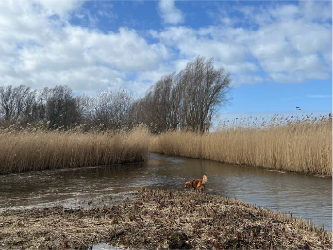
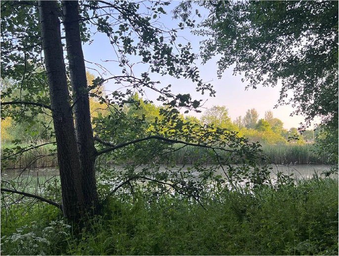
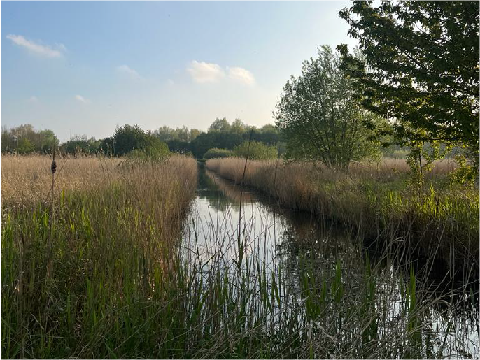

Begrazingsgebied van de landgeitbokken
''Nederlandse landgeitbokken houden deze rietlanden open. Ze grazen de braam en wilg weg en/of houden deze kort, waardoor het een optimaal gebied is voor de rietzangers en andere vogels. De bokken halen hun eten uit de natuur en moeten dus niet gevoerd worden. Ander eten kan voor deze herkauwers zeer schadelijk zijn.'' Deze landgeitbokken zijn erg belangrijk voor het ecologische systeem in de Bretten. Naast hun natuurlijke functie zijn ze ook te bezoeken! Echter zitten er een aantal voorwaardes aan vast om de rust van de natuur te bewaken. Zo mag je geen honden meenemen, de geiten niet voeren en mag er geen sport- en spel activiteit plaatsvinden. Ook moet je op afstand blijven, zodat de geiten gewoon hun ding kunnen doen zonder gestoord te worden.
Wat je tegenkomt onderweg
Onderweg naar de landgeitbokken zijn er mooie landschappen te vinden van moerassen en rivieren.
 